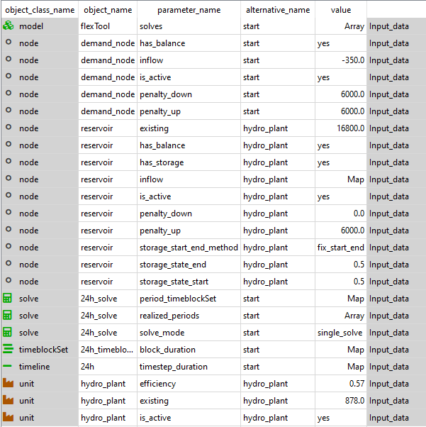

How to
How to section contains examples on how to build common energy system components. The examples assume a working understanding of FlexTool. Each example will include an example database file that are located in the 'how to examples databases' folder. You can change the filepath to database used as the input data by clicking the input_data tool.
How to create a hydro reservoir
hydro_reservoir.sq
Note! This example concerns a single reservoir hydro power plant.
If the river system has multiple plants in a series and their operations are tied,
then multiple nodes and units are needed to represent the system.
The objective is to create a hydro power plant with a reservoir and connect it to a demand node.
Hydro reservoir power plant requires three components:
- Reservoir
node - Hydro
unit - Output
node
It can be useful to create a new alternative for these components to be able to include and exclude them from the scenarios.
The reservoir is made with a node as only nodes can have storage in FlexTool. The incoming water can be represented by the inflow parameter. It can be a constant or a time variant. The unit of the inflow should be the power that can be created from the quantity of the incoming water at maximum efficiency [MW]. In the same way, the existing storage capacity should be the maximum amount of stored energy that the reservoir can hold [MWh]. In this implementation of reservoir hydro power, there is an option to spill water (energy) from the storage so that it does not run through the plant. The simplest way of allowing spilling is setting the downward penalty of the node to 0. This way the energy can disappear from the storage without a cost. The quantity of spilled energy can be seen from the results as the 'downward slack' of the node.
The required parameters of the reservoir node are (node_c and node_t sheets if using Excel input data):
is_active: yeshas_balance: yeshas_storage: yesinflow: Mapping of the incoming water as the potential power [MW]existing: The maximum size of the reservoir as the potential energy [MWh]penalty_up: a large number to avoid creating energy from nowherepenalty_down: 0 or a large number (spilling or not)- a
storage_methodto set the behaviour on how the storage levels should be managed - for short duration storages bind_within_timeblock may be best and for seasonal storages it could be best to use bind_within_solve. If historical storage level time series are available, it can be beneficial to use fix_start in thestorage_start_end_methodtogether withstorage_solve_horizon_methoduse_reference_value.
The unit is connected to the reservoir node and the output node nodeA (unit_c and unit_node_c in excel):
- The
efficiencyof the unit can be set to 1 as the inflow time series are directly expressed in MWh (using piecewise linear efficiency is naturally possible). - Set
existingcapacity [MW] is_active: yes- Create relations unit__inputNode: hydro_plant|reservoir and unit__outputNode: hydro_plant|nodeA.

How to use CPLEX as the solver
Using CPLEX requires that you have installed the software, have a licence for it and have added it to PATH or to the environment where you are using the FlexTool, so that the tool can find the solver.
CPLEX is used when the solve parameter solver is set to 'cplex'. The tool passes the built optimization model to the CPLEX solver and converts the solution file to the filetype the tool requires. The solver will produce two additional files to the work directory: 'cplex.log' and 'flexModel3_cplex.sol'. The former is the logfile of the solver and the latter contains the solution in the CPLEX format.
The tool uses Interactive Optimizer to pass the problem to the solver. The default command used:
cplex -c 'read flexModel3.mps' 'opt' 'write flexModel3_cplex.sol' 'quit'
Additional parameters:
- solver_precommand creates a text in front of the cplex call. This is useful when dealing with floating licences and if the licence system you are using allows to reserve the licence for the duration of the cplex program with a command line argument.
- solver_arguments is an array containing additional CPLEX solver commands
With these parameters, the command line call is:
'solver_precommand' cplex -c 'read flexModel3.mps' 'solver_command1' 'solver_command2' ... 'solver_command_last' 'opt' 'write flexModel3_cplex.sol' 'quit'